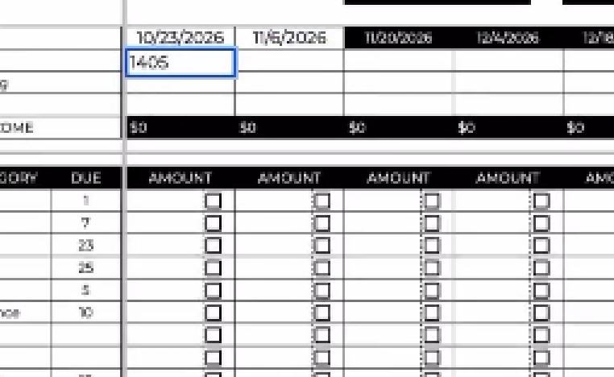

About BFRO2.
Level 4: BOM Reference
Purpose
BOM (Byte Order Mark) is metadata at the beginning of a file that tells software how to interpret the file's encoding. It is invisible in most editors, behaves unpredictably across systems, and can break pipelines silently. This document explains what BOM is, how to detect it, how to fix it, and why it's often the last thing data professionals think to check.

1. What is BOM?
Byte Order Mark (BOM) is a sequence of bytes at the start of a file that indicates the file's encoding and byte order.
| Encoding | BOM Bytes | Hex |
|---|---|---|
| UTF-8 | EF BB BF |
\xef\xbb\xbf |
| UTF-16 BE | FE FF |
\xfe\xff |
| UTF-16 LE | FF FE |
\xff\xfe |
| UTF-32 BE | 00 00 FE FF |
\x00\x00\xfe\xff |
| UTF-32 LE | FF FE 00 00 |
\xff\xfe\x00\x00 |
UTF-8 BOM is the most common culprit.
2. What BOM Looks Like
| Tool | What You See |
|---|---|
| Notepad++ | Nothing visible (status bar shows "UTF-8-BOM") |
| VS Code | Nothing visible (bottom bar shows "UTF-8 with BOM") |
| Excel | Nothing visible |
| Calc | Nothing visible |
| Hex editor | EF BB BF at the start |
| Python (repr) | \ufeff at the start of the string |
| SQL | Breaks silently |
3. Why BOM is a Problem
| Problem | Why |
|---|---|
| Invisible | You can't see it |
| Silent | Most tools don't warn you |
| Destructive | Breaks parsers, joins, comparisons |
| Persistent | Survives copy/paste, file conversions |
| Unpredictable | Some tools handle it, others don't |
| Overlooked | No one thinks about file headers |
4. How BOM Breaks Things
| Scenario | What Happens |
|---|---|
| CSV import | First field contains \ufeff -> field name mismatch |
| JSON parse | Invalid JSON -> parse error |
SQL WHERE |
column = 'value' fails (value has BOM) |
| API | Sending BOM as part of payload -> signature mismatch |
| ETL | Pipeline fails at first record -> no error message |
| File comparison | Two identical files look different -> diff fails |
5. How to Detect BOM
In Notepad++
- Open the file
- Look at the status bar (bottom right)
- If it says "UTF-8-BOM", BOM is present
- If it says "UTF-8", BOM is not present
In VS Code
- Open the file
- Look at the bottom bar
- If it says "UTF-8 with BOM", BOM is present
- If it says "UTF-8", BOM is not present
In Python
```python def has_bom(filepath: str) -> bool: """Check if a file has a BOM marker.""" with open(filepath, "rb") as f: first_bytes = f.read(3) return first_bytes.startswith(b'\xef\xbb\xbf')